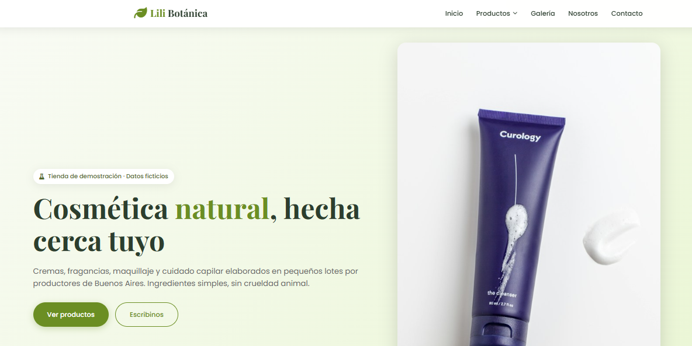

Catálogo de cosméticos
Recorré productos con imágenes, descripciones y precios de ejemplo.
Explorá una tienda de cosméticos con cremas, fragancias, maquillaje y cuidado capilar. Un ejemplo de cómo presentar tus productos y facilitar las consultas de tus clientes.
Sin registro · Datos ficticios · Se abre en una pestaña nueva

Captura real · Explorá el catálogo en la demo.
Una vidriera para tu marca
Una tienda de ejemplo para negocios de belleza y cuidado personal que quieren mostrar su catálogo online.
Recorré productos con imágenes, descripciones y precios de ejemplo.
Buscá por nombre o ingrediente y filtrá por categorías y subcategorías.
Abrí una ficha para conocer la descripción, el precio y la categoría del producto.
Explorá la galería, la presentación del negocio y un formulario de consulta simulado.
Tu primera prueba
Entrá a Productos y recorré cremas, perfumes, maquillaje o cuidado del cabello.
Probá buscar “caléndula” y combiná los filtros. Limpiá la búsqueda para volver al catálogo completo.
Consultá su ficha y explorá la sección de contacto para conocer el recorrido de una consulta.
Tu marca, tu catálogo
Contanos qué productos vendés y cómo atendés tus consultas.